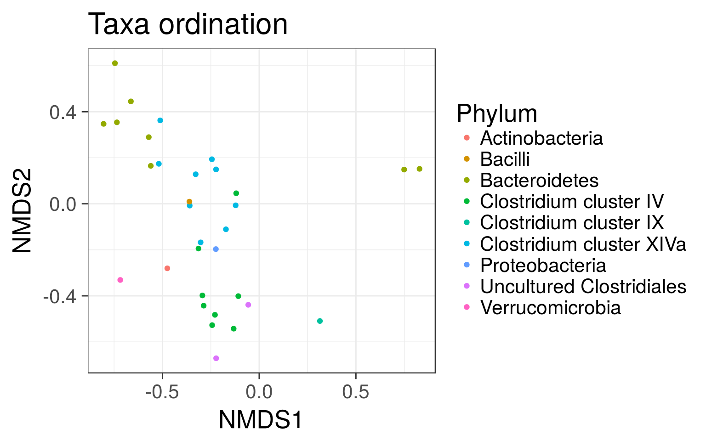
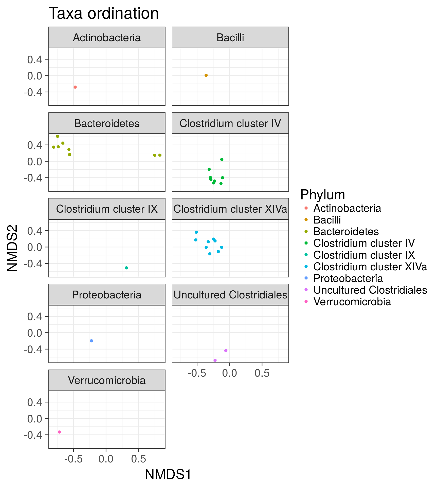
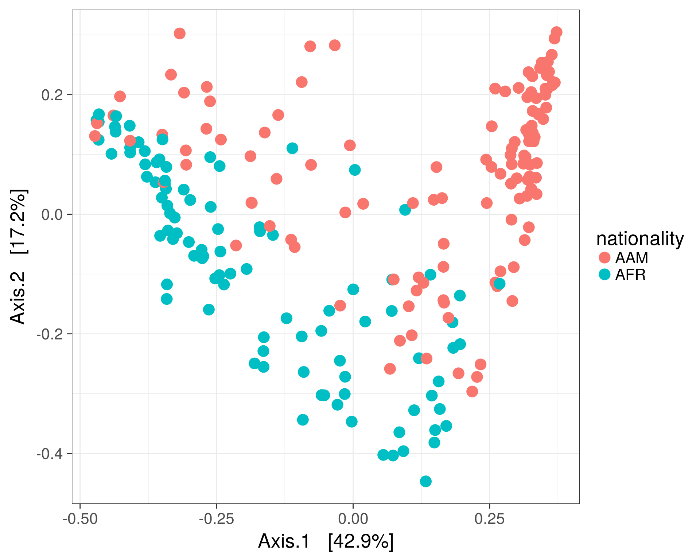
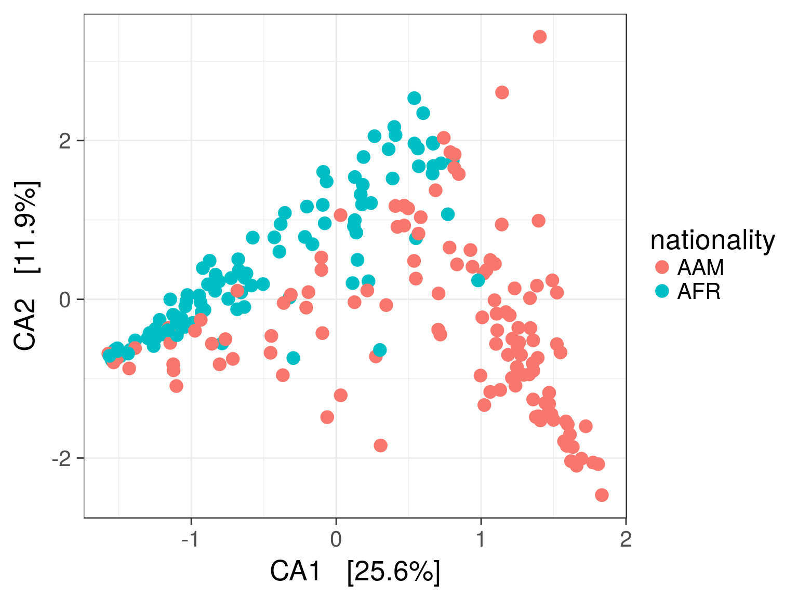
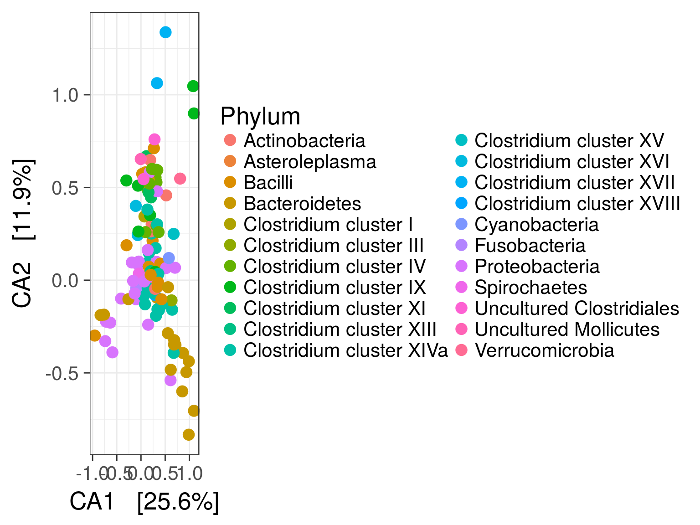
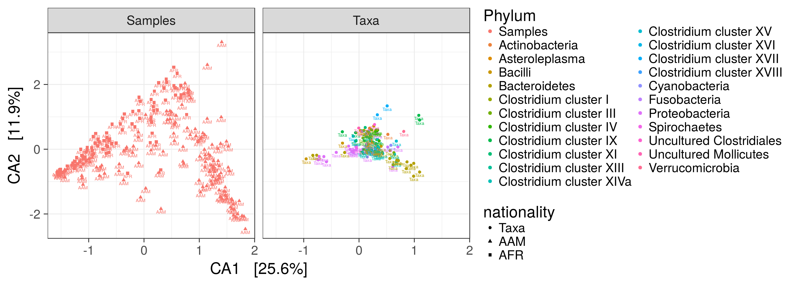

Full examples for standard ordination techniques applied to phyloseq data, based on the phyloseq ordination tutorial. For handy wrappers for some common ordination tasks in microbiome analysis, see landscaping examples
Load example data:
library(microbiome)
library(phyloseq)
library(ggplot2)
data(dietswap)
pseq <- dietswap
# Convert to compositional data
pseq.rel <- transform(pseq, "compositional")
# Pick core taxa with with >10 percent prevalence of the samples
# at a >1 percent relative abundance min.density
pseq.core <- core(pseq.rel, detection = .01, prevalence = .1)Project the samples with the given method and dissimilarity measure.
# Ordinate the data
set.seed(423542)
proj <- get_ordination(pseq.core, "NMDS", "bray")Ordinate the taxa in NMDS plot with Bray-Curtis distances
# "quiet" is here used to suppress intermediate output
quiet(p <- plot_ordination(pseq.core, ordinate(pseq.core, "NMDS", "bray"), type = "taxa", color = "Phylum", title = "Taxa ordination"))
print(p)
Grouping by Phyla
p + facet_wrap(~Phylum, 5)
plot_ordination(pseq, ordinate(pseq, "MDS"), color = "nationality") +
geom_point(size = 5)
# With samples
p <- plot_ordination(pseq, ordinate(pseq, "CCA"),
type = "samples", color = "nationality")
p <- p + geom_point(size = 4)
print(p)
# With taxa:
p <- plot_ordination(pseq, ordinate(pseq, "CCA"),
type = "taxa", color = "Phylum")
p <- p + geom_point(size = 4)
print(p)
plot_ordination(pseq, ordinate(pseq, "CCA"),
type = "split", shape = "nationality",
color = "Phylum", label = "nationality")